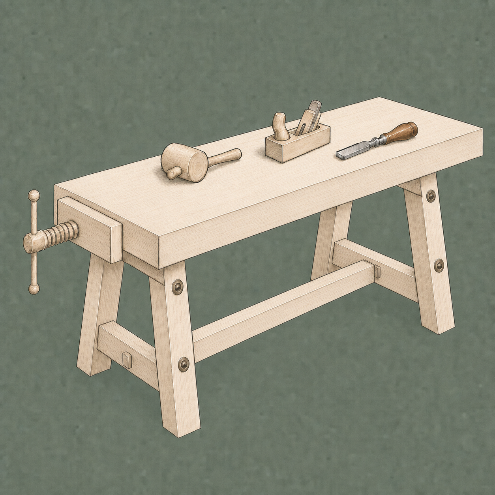

What is gezel?

Gezel is Dutch for a companion journeyman. A gezel is an AI teammate who works for you: each one has a name, a face, a role, a set of tools, and its own story that shapes how it thinks. They remember what you've done together and get better over time as you work with them.
A crew, not a chat
Most AI tools hand you a blank text field. Gezel hands you a crew — a small workshop of gezellen you assemble yourself: a researcher who digs into questions, a copywriter who drafts, a reviewer who checks, a developer who builds. Hand them work and they collaborate — passing tasks between each other, keeping notes on what they've done, and picking up where the last one left off.
Start with your Meester
Your first conversations are with a Meester gezel: the guildmaster who acts as your concierge. Ask for what you need and they'll create projects and bring on specialized gezellen to fill the roles. You can also just chat with them :)
Your data stays yours
When you use local downloaded models, everything gezel does is powered by your device - no cloud account or expense required, and everything gezel creates lives on your own device.
Where to go next
Meet the crew model in Your crew.
See how work is organized in Projects and threads.
Browse what your gezellen can do by role in the Gezel Roles section of this Handboek.